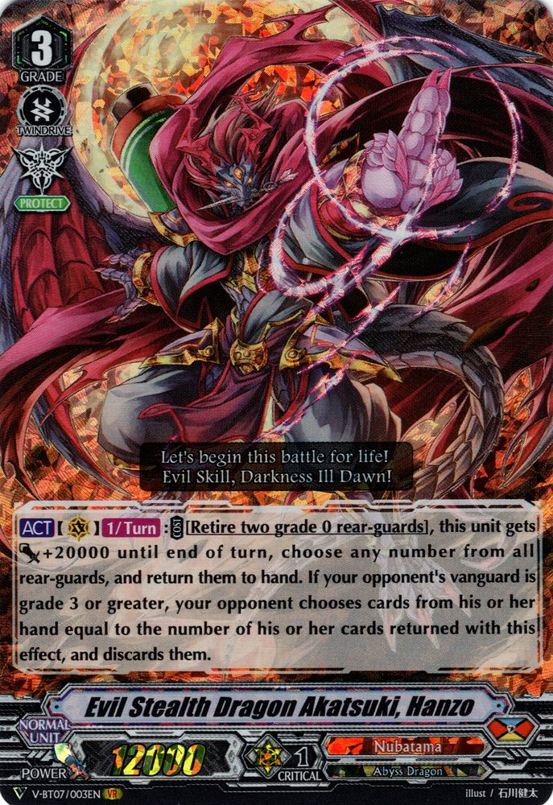
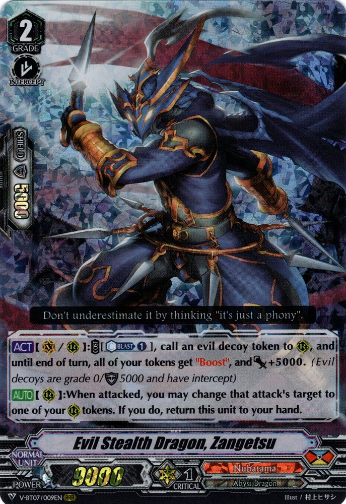

Nubatama
Evil Stealth Dragon Akatsuki, Hanzo

-
[ACT](VC)1/Turn:COST [Retire two grade 0 rear-guards], this unit gets [Power]+20000 until end of turn,
choose any number from all rear-guards, and return them to hand. If your opponent's vanguard is grade 3
or greater, your opponent chooses cards from his or her hand equal to the number of his or her cards
returned with this effect, and discards them.
Evil Stealth Dragon, Zangetsu

-
[ACT](VC/RC):COST [Counter Blast (1)], call an evil decoy token to (RC), and until end of turn,
all of your tokens get "Boost", and [Power]+5000. (Evil decoys are grade 0/[Shield]5000 and have
intercept)
-
[AUTO](RC):When attacked, you may change that attack's target to one of your (RC) tokens. If you do,
return this unit to your hand.